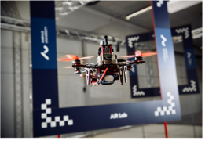
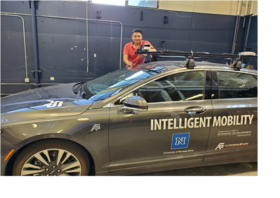

About Me
I am a Robotics researcher in Autonomous navigation and motion planning for mobile robots. I have experience in building robots from scratch to a full-autonomy system.
My research topics are Autonomous Motion Planning and Navigation, Deep Learning for Robotics, Computer Vision, and Multi-Robot Systems.
I am most skilled in: C++, python, ROS, tensorflow, pytorch and Board Games
Featured Projects
GateNet - An Efficient Deep Neural Network Architecture for Gate Perception Using Fish-Eye Camera in Autonomous Drone Racing
https://github.com/open-airlab/GateNetCan an agile racing drone senses a gate in very close environment with one single RGB camera? Yes! I built an entire hardware system and software pipeline to prove it.

I propose a convolutional neural network-based gate detector for drone racing (GateNet) that concurrently detects gate’s center, distance, and orientation with respect to the drone using only images from a single fish-eye RGB camera. GateNet achieves a high inference rate (up to 60Hz) on an onboard processor (Jetson TX2). Moreover, GateNet is robust to gate pose changes and background disturbances. The proposed perception pipeline leverages a fish-eye lens with a wide field-of-view and thus can detect multiple gates in close range, allowing a longer planning horizon even in tight environments. I use a geometric controller to control the drone and an optimization-based minimum-snap trajectory generation method for local motion planning. Link video
Localization for autonomous car in GPS-denied environments
How can an autonomous car navigate in a GPS-denied environment? Visual-inertial odometry is the key.

In this work, I engineer a visual-inertial odometry framework that composes of multiple IMU-camera systems and sensor fusion to enable an autonomous car drive independent of GPS and other external localization sources. The system runs an enhanced version of the Robust Visual Inertial Odometry (Rovio) to robustly navigate the environment using only local information capturing from the cameras and ego-motion estimation from IMUs.
Experience
AiR Lab, Aarhus University, Denmark
PhD student
September 2019 - Present
https://ece.au.dk/en/research/key-areas-in-research-and-development/communication-control-and-automation/artificial-intelligence-in-robotics/
Solving autonomous navigation for agile robotic systems
My goal is to re-innovate autonomous navigation and motion planning for robot systems with the help of Deep Learning. My research involves developing novel software and algorithms, occasionally also engineering new robot platforms, for agile quadrotors, equipped with visual sensors and small onboard computers flying at high speed in challenging scenarios. Potential applications could be Autonomous Drone Racing, Search and Rescues, and reconnaissance missions in dynamic or unstructured environments.
Autonomous Robots Lab (ARL), University of Nevada, Reno, USA
Research Engineer
December 2018 - September 2019
https://www.autonomousrobotslab.com/
Design localization system and path planning for ground an aerial robotic systems.
Solving engineering and research problems for my team in multiple projects. I have the honor to participate in the DARPA SubT challenge with my team during this time.
Education
Aarhus University, Denmark
PhD in Robotics
2019 - 2022
Doing my Ph.D. at Aarhus University, Denmark is one of the best experiences I have ever had. Here I have the opportunities to work with talented researchers in a world-class facility and a supportive environment. During this time I have developed my skills and attitude to be an independent researcher and thinker, capable of leading my research projects and, in the future, my own lab.
University of Nevada, Reno, USA
Master's degree in Computer Science
2017 - 2019
This is the place where I have learned Robotics! As a research assistant and later a lab engineer, I have worked on a few projects in different labs. I have worked with state-of-the-art path planning and state estimation frameworks for both aerial robots and ground robots, from individual missions to collaborative team missions. I have used both model-based and model-free methods for my work, and the knowledge and skills I have acquired during this time are essential for my career.
University of Oklahoma, Norman, USA
Master's degree in Industrial and System Engineering
2013 - 2015
I came to the university under a prestigious US government scholarship, the Vietnam Education Foundation (VEF), to study Industrial and System Engineering. I managed to do well in this new horizon and acquired valuable experiences, particularly in solving convex and non-convex optimization problems, that I still rely upon today.
Hanoi University of Science and Technology, Hanoi, Vietnam
Bachelor of Engineering in Automation and Control Engineering
2006 - 2011
I am graduated from one of the top technical universities in Vietnam. Here I have learned the basics of maths, physics, programming, and even some research skills.
A Little More About Me
Alongside my interests in Robotics and software engineering some of my other interests and hobbies are:
- Building and racing drones!
- Biking
- Hiking
- Football
- Board games